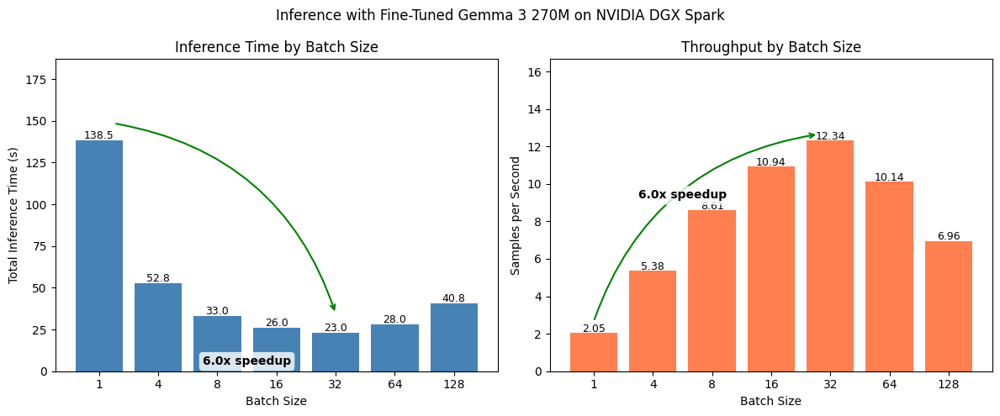

In [1]:
import time
print(f"Last updated: {time.ctime()}")Out [1]:
Last updated: Tue Apr 7 01:58:23 2026Note: This notebook is a work in progress.
Last updated: Tue Apr 7 01:58:23 2026UPTOHERE TODO:
–
Right now our model only inferences on one sample at a time but as is the case with many machine learning models, we could perform inference on multiple samples (also referred to as a batch) to significantly improve throughout.
In batched inference mode, your model performs predictions on X number of samples at once, this can dramatically improve sample throughput.
The number of samples you can predict on at once will depend on a few factors:
To find an optimal batch size for our setup, we can run an experiment:
from datasets import load_dataset
dataset = load_dataset("mrdbourke/FoodExtract-1k")
print(f"[INFO] Number of samples in the dataset: {len(dataset['train'])}")
def sample_to_conversation(sample):
return {
"messages": [
{"role": "user", "content": sample["sequence"]}, # Load the sequence from the dataset
{"role": "system", "content": sample["gpt-oss-120b-label-condensed"]} # Load the gpt-oss-120b generated label
]
}
# Map our sample_to_conversation function to dataset
dataset = dataset.map(sample_to_conversation,
batched=False)
# Create a train/test split
dataset = dataset["train"].train_test_split(test_size=0.2,
shuffle=False,
seed=42)
# Number #1 rule in machine learning
# Always train on the train set and test on the test set
# This gives us an indication of how our model will perform in the real world
dataset[INFO] Number of samples in the dataset: 1420DatasetDict({
train: Dataset({
features: ['sequence', 'image_url', 'class_label', 'source', 'char_len', 'word_count', 'syn_or_real', 'uuid', 'gpt-oss-120b-label', 'gpt-oss-120b-label-condensed', 'target_food_names_to_use', 'caption_detail_level', 'num_foods', 'target_image_point_of_view', 'messages'],
num_rows: 1136
})
test: Dataset({
features: ['sequence', 'image_url', 'class_label', 'source', 'char_len', 'word_count', 'syn_or_real', 'uuid', 'gpt-oss-120b-label', 'gpt-oss-120b-label-condensed', 'target_food_names_to_use', 'caption_detail_level', 'num_foods', 'target_image_point_of_view', 'messages'],
num_rows: 284
})
})# Load the fine-tuned model and see how it goes
from transformers import AutoTokenizer, AutoModelForCausalLM
MODEL_ID = "mrdbourke/FoodExtract-gemma-3-270m-fine-tune-v1"
print(f"[INFO] Loading in model from: {MODEL_ID}")
# Load tokenizer
tokenizer = AutoTokenizer.from_pretrained(
pretrained_model_name_or_path=MODEL_ID,
)
# Load trained model
loaded_model = AutoModelForCausalLM.from_pretrained(
pretrained_model_name_or_path=MODEL_ID,
dtype="auto",
device_map="auto",
attn_implementation="eager"
);
# Check our loaded model (it's the same architecture as before except this time with updated weights)
loaded_model[INFO] Loading in model from: mrdbourke/FoodExtract-gemma-3-270m-fine-tune-v1/home/mrdbourke/miniforge3/envs/ai/lib/python3.12/site-packages/torch/cuda/__init__.py:435: UserWarning:
Found GPU0 NVIDIA GB10 which is of cuda capability 12.1.
Minimum and Maximum cuda capability supported by this version of PyTorch is
(8.0) - (12.0)
queued_call()Gemma3ForCausalLM(
(model): Gemma3TextModel(
(embed_tokens): Gemma3TextScaledWordEmbedding(262144, 640, padding_idx=0)
(layers): ModuleList(
(0-17): 18 x Gemma3DecoderLayer(
(self_attn): Gemma3Attention(
(q_proj): Linear(in_features=640, out_features=1024, bias=False)
(k_proj): Linear(in_features=640, out_features=256, bias=False)
(v_proj): Linear(in_features=640, out_features=256, bias=False)
(o_proj): Linear(in_features=1024, out_features=640, bias=False)
(q_norm): Gemma3RMSNorm((256,), eps=1e-06)
(k_norm): Gemma3RMSNorm((256,), eps=1e-06)
)
(mlp): Gemma3MLP(
(gate_proj): Linear(in_features=640, out_features=2048, bias=False)
(up_proj): Linear(in_features=640, out_features=2048, bias=False)
(down_proj): Linear(in_features=2048, out_features=640, bias=False)
(act_fn): GELUTanh()
)
(input_layernorm): Gemma3RMSNorm((640,), eps=1e-06)
(post_attention_layernorm): Gemma3RMSNorm((640,), eps=1e-06)
(pre_feedforward_layernorm): Gemma3RMSNorm((640,), eps=1e-06)
(post_feedforward_layernorm): Gemma3RMSNorm((640,), eps=1e-06)
)
)
(norm): Gemma3RMSNorm((640,), eps=1e-06)
(rotary_emb): Gemma3RotaryEmbedding()
(rotary_emb_local): Gemma3RotaryEmbedding()
)
(lm_head): Linear(in_features=640, out_features=262144, bias=False)
)Device set to use cuda:0<transformers.pipelines.text_generation.TextGenerationPipeline at 0xfd2b55ee3920># Step 1: Need to turn our samples into batches (e.g. lists of samples)
print(f"[INFO] Formatting test samples into list prompts...")
test_input_prompts = [
loaded_model_pipeline.tokenizer.apply_chat_template(
item["messages"][:1],
tokenize=False,
add_generation_prompt=True
)
for item in dataset["test"]
]
print(f"[INFO] Number of test sample prompts: {len(test_input_prompts)}")
test_input_prompts[0][INFO] Formatting test samples into list prompts...
[INFO] Number of test sample prompts: 284'<bos><start_of_turn>user\nLiving Planet Goat Milk Whole Milk, 1 Litre, GMO Free, Australian Dairy, 8.75g Protein Per Serve, Good Source of Calcium.<end_of_turn>\n<start_of_turn>model\n'# Step 2: Need to perform batched inference and time each step
import time
from tqdm.auto import tqdm
all_outputs = []
# Let's write a list of batch sizes to test
chunk_sizes_to_test = [1, 4, 8, 16, 32, 64, 128]
timing_dict = {}
# Loop through each batch size and time the inference
for CHUNK_SIZE in chunk_sizes_to_test:
print(f"[INFO] Making predictions with batch size: {CHUNK_SIZE}")
start_time = time.time()
for chunk_number in tqdm(range(round(len(test_input_prompts) / CHUNK_SIZE))):
batched_inputs = test_input_prompts[(CHUNK_SIZE * chunk_number): CHUNK_SIZE * (chunk_number + 1)]
batched_outputs = loaded_model_pipeline(text_inputs=batched_inputs,
batch_size=CHUNK_SIZE,
max_new_tokens=256,
disable_compile=True)
all_outputs += batched_outputs
end_time = time.time()
total_time = end_time - start_time
timing_dict[CHUNK_SIZE] = total_time
print()
print(f"[INFO] Total time for batch size {CHUNK_SIZE}: {total_time:.2f}s")
print("="*80 + "\n\n")[INFO] Making predictions with batch size: 1You seem to be using the pipelines sequentially on GPU. In order to maximize efficiency please use a dataset
[INFO] Total time for batch size 1: 140.96s
================================================================================
[INFO] Making predictions with batch size: 4
[INFO] Total time for batch size 4: 49.73s
================================================================================
[INFO] Making predictions with batch size: 8
[INFO] Total time for batch size 8: 34.25s
================================================================================
[INFO] Making predictions with batch size: 16
[INFO] Total time for batch size 16: 31.62s
================================================================================
[INFO] Making predictions with batch size: 32
[INFO] Total time for batch size 32: 29.05s
================================================================================
[INFO] Making predictions with batch size: 64
[INFO] Total time for batch size 64: 26.58s
================================================================================
[INFO] Making predictions with batch size: 128
[INFO] Total time for batch size 128: 48.55s
================================================================================
pipeline’s automatic batchingimport time
chunk_sizes_to_test = [1, 4, 8, 16, 32, 64, 128]
timing_dict = {}
for batch_size in chunk_sizes_to_test:
print(f"[INFO] Running with batch_size={batch_size}")
start_time = time.time()
outputs = loaded_model_pipeline(
test_input_prompts,
batch_size=batch_size,
max_new_tokens=256,
)
elapsed = time.time() - start_time
timing_dict[batch_size] = elapsed
print(f"[INFO] batch_size={batch_size}: {elapsed:.2f}s | {len(test_input_prompts)/elapsed:.1f} samples/s\n")
print(timing_dict)[INFO] Running with batch_size=1
[INFO] batch_size=1: 141.51s | 2.0 samples/s
[INFO] Running with batch_size=4
[INFO] batch_size=4: 50.78s | 5.6 samples/s
[INFO] Running with batch_size=8
[INFO] batch_size=8: 31.32s | 9.1 samples/s
[INFO] Running with batch_size=16
[INFO] batch_size=16: 23.60s | 12.0 samples/s
[INFO] Running with batch_size=32
[INFO] batch_size=32: 31.65s | 9.0 samples/s
[INFO] Running with batch_size=64
[INFO] batch_size=64: 27.02s | 10.5 samples/s
[INFO] Running with batch_size=128
[INFO] batch_size=128: 49.46s | 5.7 samples/s
{1: 141.50579595565796, 4: 50.78420948982239, 8: 31.3158278465271, 16: 23.59804058074951, 32: 31.647218704223633, 64: 27.02465510368347, 128: 49.4646852016449}# Run in the same script/notebook where loaded_model_pipeline, test_input_prompts, and ds are defined
import time
from datasets import Dataset
from transformers.pipelines.pt_utils import KeyDataset
from tqdm.auto import tqdm
chunk_sizes_to_test = [1, 4, 8, 16, 32, 64, 128]
timing_dict = {}
all_outputs = {}
ds = Dataset.from_dict({"text": test_input_prompts})
for batch_size in chunk_sizes_to_test:
print(f"[INFO] Running with batch_size={batch_size}")
start_time = time.time()
outputs = []
for out in tqdm(
loaded_model_pipeline(KeyDataset(ds, "text"), batch_size=batch_size, max_new_tokens=256),
total=len(test_input_prompts),
desc=f"batch_size={batch_size}",
):
outputs.append(out)
elapsed = time.time() - start_time
timing_dict[batch_size] = elapsed
all_outputs[batch_size] = outputs
print(f"[INFO] batch_size={batch_size}: {elapsed:.2f}s | {len(test_input_prompts)/elapsed:.1f} samples/s\n")
# --- Verification: compare all batch sizes against batch_size=1 as baseline ---
baseline_size = chunk_sizes_to_test[0]
baseline_outputs = all_outputs[baseline_size]
print(f"{'Batch Size':<12} {'Length Match':<14} {'Outputs Match':<16} {'Time (s)':<10} {'Speedup vs bs=1'}")
print("=" * 70)
for batch_size in chunk_sizes_to_test:
outputs = all_outputs[batch_size]
len_match = len(outputs) == len(baseline_outputs)
outputs_match = outputs == baseline_outputs
speedup = timing_dict[baseline_size] / timing_dict[batch_size]
print(f"{batch_size:<12} {str(len_match):<14} {str(outputs_match):<16} {timing_dict[batch_size]:<10.2f} {speedup:.2f}x")[INFO] Running with batch_size=1[INFO] batch_size=1: 138.49s | 2.1 samples/s
[INFO] Running with batch_size=4[INFO] batch_size=4: 52.81s | 5.4 samples/s
[INFO] Running with batch_size=8[INFO] batch_size=8: 32.97s | 8.6 samples/s
[INFO] Running with batch_size=16[INFO] batch_size=16: 25.95s | 10.9 samples/s
[INFO] Running with batch_size=32[INFO] batch_size=32: 23.01s | 12.3 samples/s
[INFO] Running with batch_size=64[INFO] batch_size=64: 28.02s | 10.1 samples/s
[INFO] Running with batch_size=128[INFO] batch_size=128: 40.81s | 7.0 samples/s
Batch Size Length Match Outputs Match Time (s) Speedup vs bs=1
======================================================================
1 True True 138.49 1.00x
4 True False 52.81 2.62x
8 True False 32.97 4.20x
16 True False 25.95 5.34x
32 True False 23.01 6.02x
64 True False 28.02 4.94x
128 True False 40.81 3.39x# Run in the same script/notebook, after the benchmarking loop above
from difflib import SequenceMatcher
def extract_generated_text(output):
"""Extract the generated text string from a pipeline output.
Adjust the key access depending on your pipeline's output format."""
if isinstance(output, list):
return output[0]["generated_text"]
return output["generated_text"]
def token_similarity(text_a, text_b):
"""Simple token-level overlap: proportion of matching tokens."""
tokens_a = text_a.split()
tokens_b = text_b.split()
matcher = SequenceMatcher(None, tokens_a, tokens_b)
return matcher.ratio() # 0.0 to 1.0
# Compare all batch sizes against batch_size=1
baseline_size = chunk_sizes_to_test[0]
baseline_texts = [extract_generated_text(o) for o in all_outputs[baseline_size]]
print(f"{'Batch Size':<12} {'Length Match':<14} {'Avg Token Sim':<16} {'Time (s)':<10} {'Speedup vs bs=1'}")
print("=" * 70)
for batch_size in chunk_sizes_to_test:
outputs = all_outputs[batch_size]
candidate_texts = [extract_generated_text(o) for o in outputs]
len_match = len(candidate_texts) == len(baseline_texts)
similarities = [
token_similarity(base, cand)
for base, cand in zip(baseline_texts, candidate_texts)
]
avg_sim = sum(similarities) / len(similarities) * 100
speedup = timing_dict[baseline_size] / timing_dict[batch_size]
sim_str = f"{avg_sim:.2f}%"
print(f"{batch_size:<12} {str(len_match):<14} {sim_str:<16} {timing_dict[batch_size]:<10.2f} {speedup:.2f}x")Batch Size Length Match Avg Token Sim Time (s) Speedup vs bs=1
======================================================================
1 True 100.00% 138.49 1.00x
4 True 99.08% 52.81 2.62x
8 True 99.20% 32.97 4.20x
16 True 99.17% 25.95 5.34x
32 True 99.13% 23.01 6.02x
64 True 99.25% 28.02 4.94x
128 True 99.24% 40.81 3.39xBatched inference complete! Let’s make a plot comparing different batch sizes.
import matplotlib.pyplot as plt
# Data
data = timing_dict
total_samples = len(dataset["test"])
batch_sizes = list(data.keys())
inference_times = list(data.values())
samples_per_second = [total_samples / time for bs, time in data.items()]
# Create side-by-side plots
fig, (ax1, ax2) = plt.subplots(1, 2, figsize=(12, 5))
# --- Left plot: Total Inference Time ---
ax1.bar([str(bs) for bs in batch_sizes], inference_times, color='steelblue')
ax1.set_xlabel('Batch Size')
ax1.set_ylabel('Total Inference Time (s)')
ax1.set_title('Inference Time by Batch Size')
for i, v in enumerate(inference_times):
ax1.text(i, v + 1, f'{v:.1f}', ha='center', fontsize=9)
# --- ARROW LOGIC (Left) ---
# 1. Identify Start (Slowest) and End (Fastest)
start_val = max(inference_times)
end_val = min(inference_times)
start_idx = inference_times.index(start_val)
end_idx = inference_times.index(end_val)
speedup = start_val / end_val
# 2. Draw Arrow (No Text)
# connectionstyle "rad=-0.3" arcs the arrow upwards
ax1.annotate("",
xy=(end_idx, end_val+(0.5*end_val)),
xytext=(start_idx+0.25, start_val+10),
arrowprops=dict(arrowstyle="->", color='green', lw=1.5, connectionstyle="arc3,rad=-0.3"))
# 3. Place Text at Midpoint
mid_x = (start_idx + end_idx) / 2
# Place text slightly above the highest point of the two bars
text_y = max(start_val, end_val) + (max(inference_times) * 0.1)
ax1.text(mid_x+0.5, text_y-150, f"{speedup:.1f}x speedup",
ha='center', va='bottom', fontweight='bold',
bbox=dict(boxstyle="round,pad=0.3", fc="white", ec="none", alpha=0.8))
ax1.set_ylim(0, max(inference_times) * 1.35) # Increase headroom for text
# --- Right plot: Samples per Second ---
ax2.bar([str(bs) for bs in batch_sizes], samples_per_second, color='coral')
ax2.set_xlabel('Batch Size')
ax2.set_ylabel('Samples per Second')
ax2.set_title('Throughput by Batch Size')
for i, v in enumerate(samples_per_second):
ax2.text(i, v + 0.05, f'{v:.2f}', ha='center', fontsize=9)
# --- ARROW LOGIC (Right) ---
# 1. Identify Start (Slowest) and End (Fastest)
start_val_t = min(samples_per_second)
end_val_t = max(samples_per_second)
start_idx_t = samples_per_second.index(start_val_t)
end_idx_t = samples_per_second.index(end_val_t)
speedup_t = end_val_t / start_val_t
# 2. Draw Arrow (No Text)
ax2.annotate("",
xy=(end_idx_t-(0.05*end_idx_t), end_val_t+(0.025*end_val_t)),
xytext=(start_idx_t, start_val_t+0.6),
arrowprops=dict(arrowstyle="->", color='green', lw=1.5, connectionstyle="arc3,rad=-0.3"))
# 3. Place Text at Midpoint
mid_x_t = (start_idx_t + end_idx_t) / 2
text_y_t = max(start_val_t, end_val_t) + (max(samples_per_second) * 0.1)
ax2.text(mid_x_t-0.5, text_y_t-4.5, f"{speedup_t:.1f}x speedup",
ha='center', va='bottom', fontweight='bold',
bbox=dict(boxstyle="round,pad=0.3", fc="white", ec="none", alpha=0.8))
ax2.set_ylim(0, max(samples_per_second) * 1.35) # Increase headroom
plt.suptitle("Inference with Fine-Tuned Gemma 3 270M on NVIDIA DGX Spark")
plt.tight_layout()
plt.savefig('inference_benchmark.png', dpi=150)
plt.show()
We get a 4-6x speedup when using batches!
At 10 samples per second, that means we can inference on ~800k samples in a day.
[INFO] Number of samples per second: 12.34 | Number of samples per day: 1066176.0TK - next: vllm inference for faster modelling